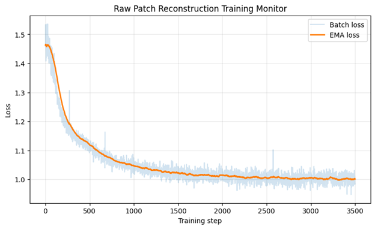

Abstract
Transformers have achieved strong results in natural language processing by operating over sequences of discrete tokens. Applying them to physiological signals like electrocardiograms (ECGs) requires converting continuous waveforms into token sequences, making the tokenization strategy critical. Current approaches use fixed-time patches or vector-quantized autoencoders, both of which impose biologically arbitrary boundaries or introduce quantization artifacts. We propose a beat-synchronous tokenization strategy that segments ECG signals according to cardiac cycles using R-peak detection, encoding each beat into a continuous embedding via a convolutional encoder. We benchmark this approach against fixed non-overlapping patches of varying sizes on multi-label diagnostic classification (PTB-XL), with self-supervised masked modeling pretraining on MIMIC-IV-ECG. SSL pretraining is complete and downstream evaluation is in progress.
Teaser Figure
Overview of our tokenization comparison: fixed non-overlapping patches segment the ECG at arbitrary time boundaries, while beat-synchronous tokenization aligns token boundaries with cardiac cycles detected via R-peaks. Each token is encoded into a continuous embedding and processed by a Transformer.

Figure Explanation
Figure 1. Comparison of ECG tokenization strategies. Fixed-patch tokenization (left) segments the signal into equal-length, non-overlapping windows, which may split individual heartbeats across token boundaries. Beat-synchronous tokenization (right) uses R-peak detection to align each token with a complete cardiac cycle, preserving the morphological structure of each beat. Both token sequences are encoded into continuous embeddings and fed into a shared Transformer encoder for downstream classification.
Introduction / Background / Motivation
What did you try to do? What problem did you try to solve?
We are investigating how to best convert continuous ECG (heart rhythm) signals into sequences of tokens so that a Transformer model can process them for medical diagnosis. The core question is whether aligning token boundaries with actual heartbeats — rather than chopping the signal into equal-length windows — leads to better diagnostic performance. We call this beat-synchronous tokenization.
How is it done today, and what are the limits of current practice?
Today, ECG signals are typically split into fixed-length, non-overlapping time windows (e.g., every 100 ms) or converted into discrete codes using vector-quantized autoencoders (VQ-VAE). Fixed-time patches are simple but biologically arbitrary — a single heartbeat can be split across multiple tokens, fragmenting the diagnostically meaningful waveform morphology. VQ-VAE methods introduce quantization error by forcing continuous signals into a discrete codebook, which can degrade signal fidelity. Neither approach is designed to respect the natural structure of the cardiac cycle.
Who cares? If you are successful, what difference will it make?
ECG interpretation is central to cardiac diagnostics. Automated ECG classification systems are deployed in clinical settings to detect arrhythmias, conduction disorders, and other cardiac conditions. If biologically aligned tokenization improves classification accuracy, it could lead to more reliable automated screening tools. More broadly, this work explores whether domain-informed tokenization is a general principle for applying Transformers to physiological time series.
Approach
What did you do exactly? How did you solve the problem? Why did you think it would be successful? Is anything new in your approach?
Our approach has three stages:
1. Tokenization. We implemented a fixed CNN tokenizer as our baseline. It uses a 1D convolution (Conv1d) with kernel size and stride equal to the patch size to project each non-overlapping segment of the 12-lead ECG into a fixed-dimensional embedding (d_model = 256). We plan to evaluate multiple patch sizes (e.g., 50, 100, 250, 400, 500 samples) to understand how token granularity affects performance. The beat-synchronous tokenizer, currently under development, will segment the ECG using R-peak detection so that each token corresponds to one cardiac cycle.
2. Self-supervised pretraining. We pretrain on MIMIC-IV-ECG (~800K 12-lead ECGs) using a masked modeling objective. 20% of tokens are masked using contiguous spans and the model must reconstruct the raw patch values at masked positions. The backbone is a 4-layer Transformer encoder with 8 attention heads, GELU activations, pre-norm architecture, and learnable positional encodings. Training uses AdamW with cosine learning rate decay and 5% linear warmup.
3. Downstream fine-tuning. The pretrained encoder is fine-tuned for binary classification diagnostic classification on PTB-XL, a benchmark dataset of ~22K 12-lead ECGs with standardized diagnostic labels. We evaluate using AUROC and F1.
What problems did you anticipate? What problems did you encounter? Did the very first thing you tried work?
We encountered issues in masked learning, as we were initially comparing the predictions of the model and the masked values in a wrong way, we were normalizing both when comparing again, so the raw signal (masked patch) was normalized again, leading to them being somewhat flat and similar.
After our first attempt, we realized that we need more than one baseline for the fixed tokenizer. Our synchronous tokenizer would probably look at 0.8 seconds, for a fair comparison we should try the fixed tokenizer for multiple patch lengths (e.g., 50, 100, 250, 400, 500 samples).
Results
How did you measure success? What experiments were used? What were the results, both quantitative and qualitative?
We evaluate downstream classification performance (Abnormal vs Normal) on PTB-XL using AUROC and F1 score, which are standard metrics for binary ECG classification. Results below are preliminary; additional patch sizes and the beat-synchronous tokenizer will be added as experiments complete.
Self-Supervised Pretraining (MIMIC-IV-ECG)
We realized that randomly masking tokens, isn't the best way, that was too easy for the model to learn, so we switched to contiguous span masking, which is more challenging and encourages the model to learn more robust representations. We also had some issues with the loss function, as we were normalizing both the predictions and the masked values before comparing them, which led to a very flat loss curve. After fixing this issue, we observed a much more reasonable loss curve that converged over 3 epochs.
The masked modeling pretraining on MIMIC-IV-ECG converged over 3 epochs. Final training loss: 0.5523

Downstream Classification (PTB-XL)
| Tokenizer | Patch Size | AUROC | F1 |
|---|---|---|---|
| Fixed CNN | 50 | 0.87 | 0.81 |
| Fixed CNN | 100 | 0.89 | 0.82 |
| Fixed CNN | 250 | 0.90 | 0.81 |
| Fixed CNN | 400 | — | — |
| Fixed CNN | 500 | — | — |
| Beat-Synchronous | Variable | — | — |
Conclusion and Future Work
Current status: We have completed the self-supervised pretraining phase on MIMIC-IV-ECG using the fixed CNN tokenizer and are currently evaluating downstream classification performance on PTB-XL. We evaluated various fixed patch sizes already, and we decided on the new tokenizer we are going to use. It will locate the heartbeat using R-peak detection using a library called Neurokit2, and then we will take 0.4 seconds before and after the peak.
Mentor's feedback:
We met with Professor , our mentor, during office hours and received feedback that our direction is sound, but that we need to accelerate experimentation and begin testing the beat-synchronous tokenizer as soon as possible. We also asked how many fixed-tokenizer baselines we should evaluate. Our mentor indicated that our current baseline plan is sufficient, and that if performance degrades beyond patch length 400 (for example), then patch length 400 can be treated as the strongest fixed baseline. Professor Andy also asked if our fixed baseline is considered the standard tokenization for ECGs. While we can get a lot of citations supporting that we should make it clear that other approaches exist especially the VQ-VAE approach, but they are more complex and they are known for being lossy (quantization errors).
Remaining work:
- Implement the beat-synchronous tokenizer using R-peak detection and convolutional beat encoding.
- Run the full pretraining and fine-tuning pipeline with the beat-synchronous tokenizer.
- Evaluate the rest of the fixed patch sizes. (should be straightforward it wouldn't take much time)
Potential risks and limitations: Our approach depends on reliable R-peak detection; noisy or arrhythmic ECGs may produce unreliable segmentation. Variable-length beat sequences require careful handling of positional encoding and batching. We plan to address this through padding and truncation strategies that preserve as much temporal structure as possible.
Societal considerations: This work aims to improve automated cardiac diagnostics. While better ECG classification could benefit clinical workflows, any deployed system must be validated on diverse patient populations to avoid bias. Our current evaluation is limited to the PTB-XL benchmark and does not constitute clinical validation.